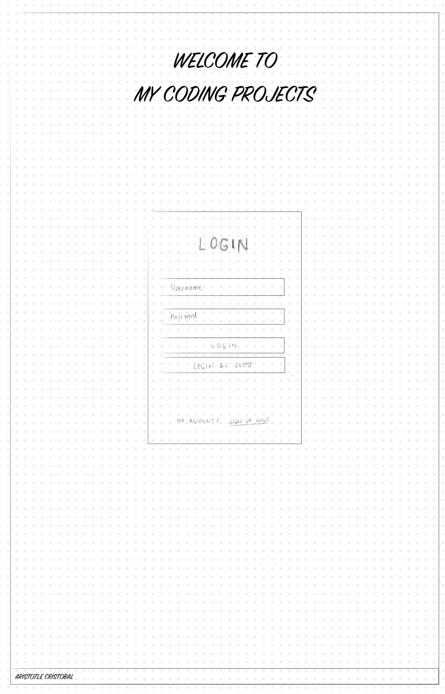
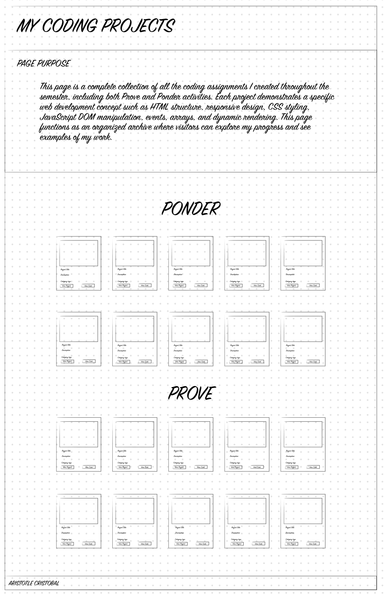

Purpose
The purpose of this site is to provide a simple login-based experience that leads users to a complete archive of all my coding projects from WDD 131. The site functions both as a personal web application and as a portfolio that showcases my progress in HTML, CSS, and JavaScript through Prove and Ponder assignments.
Audience
This site is intended for my instructor, classmates, and future employers who may want to review my coding work. It is also designed for visitors who want to explore what I’ve learned throughout the semester. The layout is simple, readable, and mobile-friendly to accommodate all types of viewers.
Description of Dynamic Elements
JavaScript will be used extensively on both the login page and the projects page. On the login page, I will implement basic validation using event listeners and conditional statements. If the entered username and password match a simple condition, the user will be redirected to the child page. If not, an error message will appear through DOM manipulation.
On the My Coding Projects page, all project data will be stored in an array of objects inside an ES module. Each project object will include properties such as title, type (Prove or Ponder), category (HTML, CSS, JS), description, image, and links. Using JavaScript:
forEach()will dynamically generate project cards.filter()will allow users to sort assignments by category or type.reduce()may be used to calculate total projects and statistics.- Conditional logic will show a message if no projects match a filter.
- DOM manipulation will update the page based on user interactions.
- All data will be imported through an ES module.
These dynamic features will satisfy the requirements for DOM interaction, events, conditionals, objects, arrays, array methods, and ES modules.
Logo
The logo will be a simple, modern design using my initials “AC” in a rounded rectangle or circle. The logo will be grayscale to match the minimalist color palette. It will appear on both the login page and the projects page.
Colors
The site will use a clean grayscale palette for a minimal and professional look.
- Primary Background: #FFFFFF (white)
- Secondary Background: #F3F4F6 (light gray)
- Card Background: #FFFFFF (white)
- Border Color: #D1D5DB (soft gray)
- Primary Text: #111827 (dark gray)
- Secondary Text: #4B5563 (neutral gray)
- Accent Gray (optional): #6B7280
- Button Background: #E5E7EB (light gray)
Fonts
The site will use clean, readable fonts from Google Fonts:
- Headings: Poppins, sans-serif
- Body Text: Inter, system-ui, sans-serif
These fonts maintain a minimal aesthetic and improve readability on all devices.
Content
Home Page – Login
Title: Welcome to My Coding Projects
The home page will contain a centered login card with input fields for username and password, a login button, and an optional “Continue as Guest” link. A brief welcome message will explain the purpose of the site and direct users to log in to access the project archive.
Child Page – My Coding Projects
Title: My Coding Projects
This page will display all Prove and Ponder assignments from WDD 131. Project cards will include:
- Project title
- Type: Prove or Ponder
- Category: HTML, CSS, or JavaScript
- Short description
- Thumbnail image (optional)
- “View Project” and “View Code” buttons
A page-purpose paragraph at the top will describe what this page includes and what I accomplished during the semester.
Wireframes
Home Page – Login Wireframe
The home page has a large title and a centered login card.
Child Page – My Coding Projects Wireframe
The projects page contains a purpose paragraph and organized grids of project cards.
